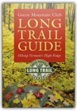
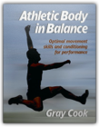
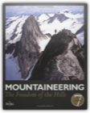
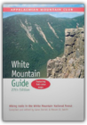
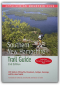
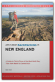
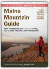

Lonely Planet Hawaii
Sara Benson, Conner Gorry, Amy Balfour, E Clark Carroll, Ned Friary, Glenda Bendure, Luci Yamamoto, Ryan Ver Berkmoes
174179806X
“It’s easy to see why Hawaii has become synonymous with paradise. Just look around at the sugary beaches, Technicolor coral reefs and volcanoes ready for adventure.” – Sara Benson, Lonely Planet WriterOur Promise
You can trust our travel information because Lonely Planet authors visit the places we write about, each and every edition. We never accept freebies for positive coverage, and you can rely on us to tell it like we see it.
Inside This Book…
8 fun-and-sun loving authors
24 itineraries
179 beaches
Miles of hiking trails
Inspirational photos
Clear, easy-to-use maps
Outdoor activities chapter
In-depth background
Comprehensive planning tools
Easy-to-read layout

Green Mountain Club Long Trail Guide: Hiking Vermont's High Ridge
Green Mountain Club, Steve Larose, Ben Rose, Dave Hardy
1888021187
Following the spine of the Green Mountains from Massachusetts to Quebec, the 272-mile Long Trail is Vermont's rugged, world-renowned hiking route. Whether you are an end-to-ender or a day hiker, the Long Trail Guide contains the information you"ll need to enjoy the scenery and solitude of Vermont's highest peaks.

Athletic Body in Balance
Gray Cook
0736042288
Great athletes make difficult moves look effortless with a combination of skill, strength, and balance. Traditional conditioning builds a fitness base, but modern sports training takes into account athletic movement patterns. Athletic Body in Balance is the first guide of its kind to show you how to train for smooth, fluid movement and prevent muscle imbalances, mobility restrictions, stability problems, and injuries.Physical therapist and sports conditioning expert Gray Cook has proven the effectiveness of his approach through the performances of athletes in the NFL, NBA, NHL, WNBA, and Reebok® University's sports training system. Cook's methods will help you identify functional weaknesses; correct imbalances; explore your potential; and refine sport-specific movement skills such as jumping, kicking, cutting, and turning. You will see where conditioning is breaking down and how to get your body back on track.
Whereas other books concentrate on maximizing your strengths, Athletic Body in Balance focuses on exposing and overcoming your weaknesses to form a foundation for long-term training gains. Learn how to maintain what you gain and build on your improvements. Make this comprehensive assessment tool your training guide. Prepare and repair your body for ultimate athletic performance with Athletic Body in Balance.

Mountaineering
Steven M Cox
1904057276
This seventh edition of Mountaineering: The Freedom of the Hills has been completely revised to reflect rapid changes in mountaineering, including the development of new techniques and the introduction of new and improved equipment. Written by experienced climbers, it maintains the high standards set by previous editions, teaching safe, time-tested techniques and emphasizing the use of sound judgement in the mountains. New chapters have been added on waterfall ice and mixed climbing, stewardship and access issues and physical conditioning for climbing. This is the definitive manual on mountaineering, recognised and used worldwide and regarded as the essential tool for all climbers.

AMC White Mountain Guide, 27th: Hiking Trails in the White Mountain National Forest
Gene Daniell, Steven D. Smith
1929173229
The bible for hikers since 1907, AMC's White Mountain Guide is the most trusted guide to hiking trails in the White Mountains of New Hampshire and Maine. This latest edition features the most up-to-date descriptions available of more than 500 trails in the White Mountain National Forest. In addition, the guide's summary of easy-to-moderate hikes, list of 4000-footers, plus information on Leave No Trace principles make this guide indispensable for every New Hampshire hiker.More than just trail descriptions, the 27th edition includes:
*6 pull-out full-color maps created using GPS technology
*distances, times, and elevations
*trip planning
*what to carry
*campgrounds, huts, and shelters
*fire regulations
*backcountry hazards
*White Mountain National Forest information
*extensive information on Mt. Washington, New Hampshire's highest peak

Southern New Hampshire Trail Guide, 2nd: AMC Guide to Hiking Mt. Monadnock, Mt. Cardigan, and the Lakes Region
Gene Daniell, Steven D. Smith
1929173601
Now completely revised and updated to include trails in newly accessible natural areas, this comprehensive guide to southern New Hampshire's mountain and parks is a must for every hiker.

AMC's Best Backpacking in New England
Matt Heid
1929173741
This new guide from the publishers of the Best Day Hikes series provides a comprehensive look at what you need to plan a memorable backpacking trip in a region known for its rugged terrain. You’ll explore the wildest, least-traveled trails on 33 trips that are rated by difficultyfrom Easy to Epic. You’ll read about nine wilderness areas, eight state forests, four state parks, two national forests, and a variety of other protected landscapes. Each trip description includes regional locator and trip maps, as well as photos of the area taken by author Matt Heid. Heid maximizes your wilderness experience by selecting loop hikes, conveniently eliminating the need to cross roads or shuttle a car. Overnight optionsincluding camp sites and lean-tosare also listed, as well as tips on safety and gear to better prepare you for a challenging and rewarding backcountry adventure.

Berlin in Panoramen.
Torsten Andreas Hoffmann
387584162X
Alpine Climbing: Techniques to Take You Higher
Mark Houston, Kathy Cosley
0898867495
Alpine Climbing: Techniques

Neue Bahnhofe in Berlin
Christel Kapitzki
3931321894

New England Bouldering
Tim Kemple
0979264472
New England has some of the finest bouldering in the USA. Published in spring 2009, this color book provides a comprehensive guide to over 1100 problems at the region's best areas, including:Lincoln Woods, RI
Hammond Pond, MA
The Hideaway and Happy Valley, MA
Farley, MA
Pawtuckaway, NH
Rumney, NH
Smuggler's Notch, VT
McKenzie Pond, NY

Maine Mountain Guide, 10th: AMC'S Comprehensive Guide to Hiking Trails of Maine, Featuring Baxter State Park and Acadia National Park
Carey M. Kish
1934028304
A trusted resource for more than half a century, AMC’s Maine Mountain Guide has been painstakingly updated, revised, and expanded for this tenth edition, including 75 new trails in the state’s diverse mountains. With options for every ability and interest level, the guide features updated descriptions of more than 450 trails, expert advice about trip planning and safety, and full-color, GPS-rendered maps with trail segment mileage. Featuring expanded coverage of Baxter State Park and now including Acadia National Park, this book is the definitive trail guide to the mountains of Maine.

ULTIMATE—The First Four Decades
Pasquale Anthony Leonardo, Adam Zagoria
0976449609

How to Rock Climb!, 4th
John Long
0762724714
How to Rock Climb!, now in its fourth edition, is the world's top instructional book on climbing. All the fundamentals—from ethics to getting up the rock—are presented in John Long's classic style. Revised and updated to reflect the modern standards of equipment, technique, and training methods, this guide includes sections on face climbing; crack climbing; ropes, anchors, and belays; getting off the rock; sport climbing; and much more. It is the essential how-to book for rock climbers everywhere.

Rock Climbing: Mastering Basic Skills
Craig Luebben
0898867436
New in the Mountaineers Outdoor Expert series: instruction for the beginning to intermediate rock climber by an internationally known guide.*Author is an American Mountain Guide Association (AMGA) certified rock guide and instructor
*Learning exercises reinforce key skills
*Step-by-step technique illustrated in over 150 photos
Craig Luebben has taught rock climbing basics to hundreds of clients and has conducted self-rescue clinics across the U.S. Here he presents the most common foot positions, hand grips, and body positions and how to use them precisely, from the smear to the crimp to the twistlock. Going beyond static moves, he emphasizes a dynamic style of movement for the greatest climbing efficiency—a style that makes the most of your strength and your time on the rock.
With an emphasis on safety and how to stay within your abilities, Luebben teaches how to evaluate potential hazards and then avoid them. Topics addressed include: risk management, face climbing, crack climbing, gear, knots, anchors, belaying, toproping, sport climbing, trad climbing, multi-pitch free climbs, rappelling, aid climbing, bouldering, training, and self-rescue.

Ultimate Techniques and Tactics
James Parinella, Eric Zaslow
073605104X
Improve your poaches, hone your hucks, and sharpen your cuts. With Ultimate Techniques & Tactics as your guide, you will master all of the offensive and defensive skills and principles critical to excelling in the sport.This essential handbook contains more than the mechanics of the game; it presents in-depth instruction on using key skills such as throwing, cutting, and catching in game situations. You will
-study flight paths to maximize your chances of completing passes;
-understand the finer points of catching; and
-learn when, where, and how to cut to gain yardage, improve disc position, and maintain possession.
You will also stun your opponents when your team employs the offensive and defensive strategies learned in Ultimate Techniques & Tactics. Use your complete knowledge of offensive skills to organize such offenses as zone, stack, weave, and split stack. And when every point matters, create an impenetrable line of defense to save the game. Disrupt your competitors' rhythm and timing using one-on–one, zone, or junk defenses like the clam.
Ultimate Techniques & Tactics is the first and best guide to the sport of Ultimate. Use it to become an Ultimate champion!

Gaudi: Architect and Artist
Jeremy Roe
1859959245
Spanish architect and designer, Antoni Gaudi (1852-1926) was an important and influential figure in the history of contemporary Spanish art. His use of colour, application of a range of materials and the introduction of organic forms into his constructions were an innovation in the realm of architecture. In his journal, Gaudi freely expressed his own feelings on art, "the colours used in architecture have to be intense, logical and fertile." His completed works (the Casa Batllo, 1905-1907 and the Casa Mila, 1905-1910) and his incomplete works (the restoration of the Poblet Monastery and the Retable d'Alella in Barcelona) illustrate the importance of this philosophy. His furniture designs were conceived with the same philosophy, as shown, for example, in his own office (1878) or the lamps in the Placa Reial in Barcelona. The Sagrada Familia (1882-1926) was a monumental project which eventually took over his life (it was still incomplete at the time of his death).
Appalachian Trail Guide to Maine
Ray Ronan
1889386669
This is the official guide to the 281 miles of the Appalachian Trail in Maine, from the summit of Katahdin in Baxter State Park south and west to the New Hampshire border and the Mahoosucs. The book included in this package is a planning guide with rich historical background on the lands and development of the trail. The accompanying seven, four-color, topographic maps (at 1:62,500 scale, with modified shaded relief) have detailed trail-route descriptions on the backs, with elevation profiles. Distributed by the Appalachian Trail Conservancy.

Glacier Travel & Crevasse Rescue: Reading Glaciers, Team Travel, Crevasse Rescue Techniques, Routefinding, Expedition Skills 2nd Edition
Andrew Selters, Andy Selters
0898866588
Comprehensive & packed with information by a seasoned trainer for the American Alpine Institute. A must before stepping onto a glacier.

The 4000-Footers of the White Mountains
Steven D. Smith, Mike Dickerman
1931271240
The first comprehensive guide and history solely devotedto New Hampshire's 48 peaks exceeding 4000 feet in elevation.

Glacier-Waterton International Peace Park
Vicky Spring, Tom Kirkendall
089886805X
CASCADE ALPINE GD:STEVENS PASS

The Core Performance: The Revolutionary Workout Program to Transform Your Body & Your Life
Mark Verstegen, Pete Williams
1594861684
Core Performance, the breakthrough fitness program that has already shipped more than 50,000 copies in hardcover, is the first program that delivers strength and muscle mass, endurance and a lean body, balance and flexibility, athletic quickness and power—all in less than an hour a day. How? By giving you a personal coach who has worked with some of the most famous and successful athletes in the world today.The intense focus on the muscles of your core—abs, lower back, hips, and thighs—will help you stand taller and prevent the back pain from which most people eventually suffer. The detailed nutrition section guarantees that you'll feed your muscles, starve your fat, and get boundless energy when you need it most. This program is like nothing you've ever seen before—it enables you to totally transform your body in just 12 weeks. The potential is within you, and the power to unleash that potential is within Core Performance.

The Rough Guide to Hawaii
Greg Ward
1848365292
"The Rough Guide to Hawaii" is the essential travel guide to this breathtaking archipelago. It covers the six major islands - Oahu, The Big Island, Maui, Lanai, Molokai and Kauai - with reviews of the best resorts, hotels, restaurants and nightlife for every taste and budget. The guide includes practical advice on exploring all the attractions, from gushing volcanoes and secluded beaches to lush rainforests and dramatic coastlines, and details all you need to know about windsurfing, scuba-diving, hiking and more. "The Rough Guide to Hawaii" goes deeper than any other guide, taking a detailed look at Hawaiian history, culture, language and music, giving you a rounded understanding of the newest US state. And with dozens of easy-to-use maps, photographs and a full-colour section, this guide is your essential companion to Hawaii. Make the most of your holiday with "The Rough Guide to Hawaii".

Rock Climbs in the White Mountains of New Hampshire, 3rd edition
Ed Webster
0965319903
Rock Climbs in the White Mountains of New Hampshire, 3rd edition (East Volume) is the authoritative and comprehensive rock climbing guidebook to the eastern portion of New Hampshire's White Mountain region. The 1st edition of this guidebook was published in 1982. This latest definitive edition covers all the rock climbs on Cathedral and Whitehorse Ledges in North Conway, the cliffs of the Kancamagus Highway area west of Conway, the outlying crags of the Mt. Washington Valley, and the alpine cliffs of Huntington Ravine on New England's tallest peak, Mt. Washington (6,288').In addition, this pocket-sized guidebook contains numerous detailed photo-diagrams of the cliffs and rock climbs themselves, written descriptions and historical data about the various routes, and a multitude of archival and modern photographs of famous first ascents in the region, from the 1930s to the present. For extra durability, the guidebook also has a sewn and glued binding, and a plastic laminated synthetic cover.

Zinn & the Art of Road Bike Maintenance
Lennard Zinn
1884737706
From shifters to derailleurs, pedals to handlebars, this book covers every component of a road bike. It helps new bike owners tackle simple to advanced projects, listing the tools needed, explaining bike components, and demonstrating with detailed illustrations how to work on each part.